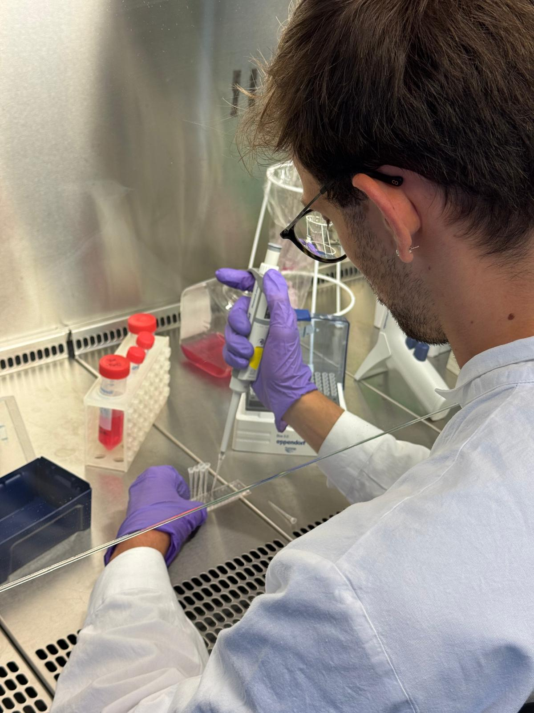
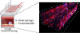

Manche Bakterien verstecken sich in Immunzellen, um tief in den Körper einzudringen und wichtige Barrieren zu überwinden. Ein Labormodell hilft, diesen Trick zu untersuchen.
Makrophagen – Wächter mit doppeltem Gesicht
Stell dir vor, dein Körper ist eine riesige, komplex organisierte Stadt. Durch sie ziehen sich Blutgefäße wie Straßen und Wege, auf denen wichtige Güter transportiert und Informationen verteilt werden. Damit alles reibungslos funktioniert, braucht es Ordnungshüter– und genau das übernehmen bestimmte Zellen deines Immunsystems. Eine besonders wichtige Rolle spielen dabei die Makrophagen. Ihr Name bedeutet wörtlich „Großfresser“, und das beschreibt ihre Aufgabe ziemlich gut: Sie patrouillieren in den Straßen deines Körpers, spüren Eindringlinge auf, „fressen“ gefährliche Überreste und alarmieren andere Zellen bei Gefahr. Ein bisschen wie Polizei, Feuerwehr und Müllabfuhr in einem.
Doch was passiert, wenn diese Ordnungshüter getäuscht werden? Wenn sich Kriminelle als Polizisten verkleiden, das Polizeiauto kapern und auf diesem Weg Zugang zu den gesicherten Bereichen der Stadt erhalten? Genau das gelingt einigen besonders raffinierten Bakterien. Sie kapern Makrophagen – und nutzen sie als Transportmittel durch den Körper. So werden aus den Beschützern trojanische Pferde.
Ein Beispiel: Listeria monocytogenes, ein Bakterium, das über infizierte Lebensmittel, vor allem Milchprodukte und rohes Fleisch, in den Körper gelangt. Oft bleibt es harmlos – doch wenn es gelingt, in Makrophagen einzudringen, kann es sich mit deren Hilfe durch den gesamten Körper schleusen lassen. Quasi als blinder Passagier im Polizeiwagen. Besonders gefährlich wird das, wenn es dadurch in geschützte Stadtteile vordringt – etwa ins Gehirn, was bei schwangeren oder immungeschwächten Personen zum Tod führen kann.
Doch wie gelingt dieser Grenzübertritt überhaupt? Wie schaffen es Zellen – ob Helfer oder getarnte Feinde – die Barrieren zu überwinden, die unsere Organe eigentlich schützen sollen?
Die Blutgefäßbarriere – ein fester Schutzwall
In unserer Körperstadt verlaufen kilometerlange Versorgungslinien – das Blutsystem. Es bringt Sauerstoff, Nährstoffe und Immunzellen genau dorthin, wo sie gebraucht werden. Die Wände dieser Adern sind aber keine offenen Passagen. Sie sind eher wie streng kontrollierte Stadtmauern, bewacht von spezialisierten Wachposten: den Endothelzellen. Diese Zellen bilden die Blutgefäßbarriere und entscheiden, wer passieren darf – und wer draußen bleiben muss.
Diese Barriere schützt besonders empfindliche Bezirke, etwa das Gehirn, mit hoher Präzision. Nur bestimmte Zellen erhalten Zugang – und das auch nur, wenn sie sich entsprechend „ausweisen“ können. Makrophagen gehören normalerweise zu den berechtigten Zellen: Wenn irgendwo im Gewebe Alarm geschlagen wird, können sie durch diese Barriere wandern und Hilfe leisten.
Aber was passiert, wenn sie dabei unerkannt einen Eindringling mit sich führen?
Dann wird aus der gut bewachten Stadt ein Ort, an dem sich der Feind frei bewegen kann – weil er getarnt im Polizeiwagen sitzt. Genau hier setzt meine Forschung an: Ich möchte verstehen, wie sich infizierte Makrophagen an diesen Stadtmauern verhalten. Werden sie leichter eingelassen? Drängen sie sich mit mehr Nachdruck durch? Und wie reagieren die Wachposten?
Um das zu untersuchen, reicht ein klassisches Zellkulturmodell nicht aus. Es braucht ein realitätsnahes Abbild der Gefäßbarriere – eine Art Mini-Stadtmauer im Labor, in der man mit dem Mikroskop die Reaktionen der Zellen beobachten kann.
Was ist eigentlich diese Zellkultur?
Zellkultur bezeichnet das Wachstum von Zellen außerhalb des Körpers – also im Labor, meist auf Kunststoffplatten oder in speziellen Gefäßen. Die Zellen stammen häufig aus Gewebeproben und werden mit einer nährstoffreichen Lösung versorgt, die ihnen das Überleben ermöglicht.
Da hier mit lebenden Zellen gearbeitet wird, ist sterile Arbeit unerlässlich. Das bedeutet: keine Bakterien, Viren oder Pilze dürfen sich einschleichen, denn schon kleinste Verunreinigungen können ganze Experimente zerstören. Deshalb arbeiten Forschende in sogenannten Sterilwerkbänken – geschlossenen Arbeitsbereichen mit gefilterter Luft –, tragen Handschuhe, desinfizieren regelmäßig alle Oberflächen und benutzen ausschließlich sterile Materialien.
Diese klassische Methode wird seit Jahrzehnten in der Forschung eingesetzt. Allerdings wachsen die Zellen dabei meist nur zweidimensional, ohne räumliche Strukturen oder Flussbedingungen wie im menschlichen Körper. Neue Ansätze wie das „Vessel-on-a-Chip“-System versuchen genau das realistischer abzubilden – und eröffnen damit neue Perspektiven.

Das „Vessel-on-a-Chip“-System – eine Miniaturstadt unter dem Mikroskop
Um herauszufinden, wie Makrophagen mit der Blutgefäßbarriere interagieren, braucht es ein möglichst realistisches Modell. Statt direkt am Menschen zu forschen oder auf Tiere zurückzugreifen, verwende ich ein sogenanntes „Vessel-on-a-Chip“-System. Man kann sich das vorstellen wie eine winzige Stadt im Labor, in der sich Blutgefäße, Immunzellen und Krankheitserreger auf engstem Raum begegnen – unter streng kontrollierten Bedingungen.
In dieser Miniaturstadt ist die Blutgefäßwand durch eine Schicht von Endothelzellen dargestellt – dieselben Zelltypen, die im Körper die Innenwände der Blutgefäße bilden. Das System erlaubt es, Nährstoffflüsse, Geometrie und die daraus resultierenden mechanischen Kräfte, die an den Endothelzellen wirken, von außen gezielt zu steuern. Anders als bei traditionellen Zellkulturen fließen hier Nährstofflösungen durch kleine Kanäle, was die natürliche Umgebung im Körper besser nachahmt – vergleichbar mit echten Verkehrswegen in einer Stadt, auf denen sich Zellen wie Fahrzeuge bewegen können.
Dieses Modell bildet die Grundlage meiner Experimente und erlaubt einen detaillierten Blick auf die Reise der Makrophagen durch die Barriere – und darauf, wie sich ihr Verhalten dabei verändert.
Das „Vessel-on-a-Chip“-System

Der Versuchsaufbau basiert auf einem durchsichtigen Kunststoffchip, der ein Blutgefäß im Miniaturformat nachbildet. In ihm wachsen Endothelzellen – jene Zellen, die im Körper die Innenwand unserer Gefäße bilden. Durch feine Kanäle wird ein Nährmedium geleitet, das den natürlichen Blutstrom simuliert.
Makrophagen – also Immunzellen – werden in dieses System eingebracht, teils infiziert mit Listerien. So lässt sich untersuchen, wie sich ihr Verhalten verändert: Haften sie stärker an? Wie verhalten sich die Endothelzellen?
Mithilfe fluoreszierender Farbstoffe werden die verschiedenen Zellstrukturen sichtbar gemacht: Zellkerne erscheinen blau, das Zellskelett (Aktin) rot, die Makrophagen grün. So kann man die Position und Bewegung einzelner Zellen präzise nachverfolgen – fast wie mit einer Nachtsichtkamera im Mikromaßstab.
Was passiert im „Vessel-on-a-Chip“? – Ergebnisse im Miniaturmodell
Wie Immunzellen Gefäßbarrieren überwinden

In unserem Modell lässt sich beobachten, wie einzelne Makrophagen die Endothelzellschicht durchqueren – also von der „Gefäßseite“ ins umliegende Gewebe gelangen. Dieser Prozess wird Transmigration genannt und ist zentral für die Immunabwehr – aber auch ein möglicher Weg für Krankheitserreger, sich im Körper auszubreiten.
Mithilfe fluoreszierender Farbstoffe werden die verschiedenen Zellstrukturen sichtbar gemacht: Zellkerne erscheinen blau, das Zellskelett (Aktin) grün, die Makrophagen rot.
Die gefärbten Bilder zeigen deutlich, wie sich rote Makrophagen durch das grüne Netzwerk der Endothelzellen (Aktin) schieben. Ihre Zellkerne – ebenso wie die der Endothelzellen – sind blau eingefärbt und zeigen gut die Position der Zellen.
Dabei nutzen Makrophagen zwei Wege: zwischen den Zellen hindurch oder direkt durch eine Zelle – ähnlich wie durch ein kontrolliertes Tor in einer Stadtmauer. Die Barriere bleibt dabei weitgehend intakt – der „Durchgang“ schließt sich nach der Passage wieder.
In meiner Masterarbeit habe ich untersucht, wie sich Makrophagen gegenüber der Blutgefäßwand verhalten – sowohl wenn sie gesund sind, als auch wenn sie von Bakterien infiziert wurden. Die wichtigste Erkenntnis: Infizierte Makrophagen haften deutlich stärker an der Gefäßwand. Das heißt, sie halten sich hartnäckiger an der Grenze der Stadt auf, als ob sie unbedingt hineingelangen wollen.
Ein weiteres spannendes Ergebnis betrifft die Struktur der Gefäßwand selbst. Werden die Endothelzellen vom Blutfluss angeströmt, sehen sie normalerweise wie eine gleichmäßig gepflasterte Mauer aus: geordnet, ausgerichtet, stabil. Doch wenn gesunde Makrophagen längere Zeit an dieser Mauer verweilen, stört das diese Ordnung – die Zellen richten sich weniger einheitlich aus. Die Stadtmauer wird also unruhiger, die Pflastersteine verrutschen. Infizierte Makrophagen hingegen scheinen dieses Ordnungsprinzip interessanterweise nicht zu stören. Was die biologische Bedeutung dieser Ergebnisse ist, ist noch unklar. Es zeigt jedoch, dass die Endothelzellen anders auf infizierte Makrophagen als auf nicht-infizierte Makrophagen reagieren.
Noch spannender: Makrophagen schaffen es tatsächlich, die Stadtmauer zu durchbrechen. Dabei nutzen sie zwei Wege – entweder zwischen den Zellen hindurch (wie jemand, der sich durch ein dünnes Tor drückt) oder direkt durch die Zellen selbst (vergleichbar mit jemandem, der sich durch die Stadtmauer bohrt). Das gelingt ihnen unabhängig davon, ob sie infiziert sind oder nicht. Doch gerade für die infizierten Zellen bedeutet das: Das „Trojanische Pferd“ hat den Stadtrand erfolgreich überwunden. All diese Beobachtungen zeigen, wie Bakterien das Verhalten unserer Immunzellen manipulieren können, um sich im Körper auszubreiten – ohne dabei sofort aufzufallen.
Warum das wichtig ist
Das „Vessel-on-a-Chip“-System zeigt, dass moderne, realitätsnahe Modelle eine wichtige Alternative zu Tierversuchen bieten – präziser, menschennaher und ethisch vertretbar. Was im Labor auf Mikroebene passiert, hat große Bedeutung: Gerade für Risikogruppen kann eine Infektion mit Listerien tödlich enden – besonders dann, wenn die Erreger Schutzbarrieren wie die Blut-Hirn-Schranke überwinden. Ein besseres Verständnis dieser Mechanismen eröffnet neue Wege in der Medizin: Vielleicht lohnt es sich, in Zukunft nicht nur das Bakterium selbst ins Visier zu nehmen, sondern auch seine unfreiwilligen Helfer – unsere eigenen Zellen. Wer die Schwachstellen in der Stadtmauer kennt, kann die Stadt besser schützen – ganz gleich, ob es sich um eine mittelalterliche Mauer oder die Blutgefäßwand eines Menschen handelt.
Über den Autor
Felix Romer hat in Tübingen „Molekulare Zellbiologie und Immunologie“ studiert – und sich dabei besonders für Zellmechanik und quantitative Mikroskopie begeistert. In seiner Masterarbeit in der AG Bastounis, CMFI, untersuchte er, wie Immunzellen Blutbarrieren überwinden. Besonders spannend findet er das Zusammenspiel von Biologie, Physik und Technik und, wie automatisierte quantitative Bildauswertungen zelluläre Prozesse sichtbar und messbar machen lassen.
https://felixlucasromer.wixsite.com/felixromer
bastounislab.org/
Zum Weiterlesen
Das Paper, auf dem der Artikel beruht, befindet sich im Preprint:
Listeria-Infected Macrophages Promote Biomechanical Alterations in Endothelial Cell Monolayers
for Transmigration
https://dx.doi.org/10.2139/ssrn.5357421